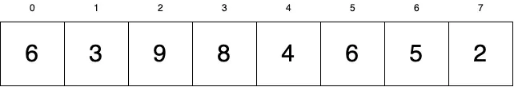
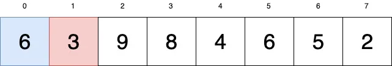
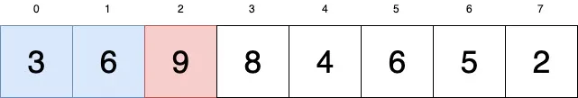
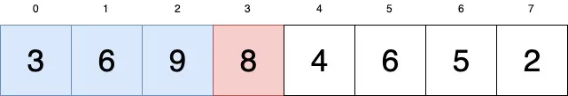
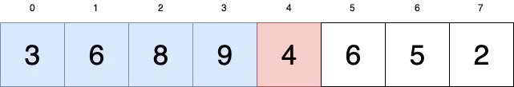
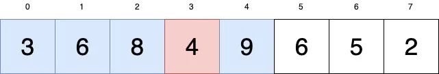
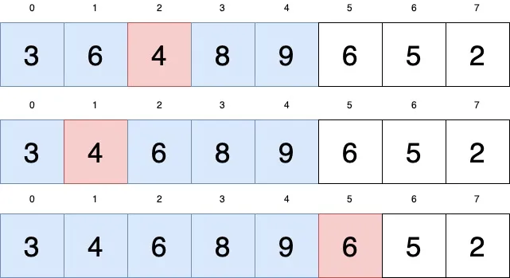
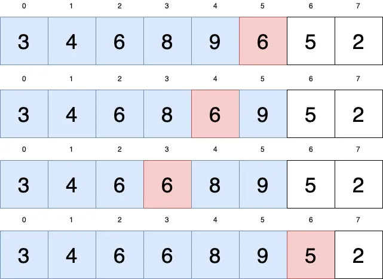
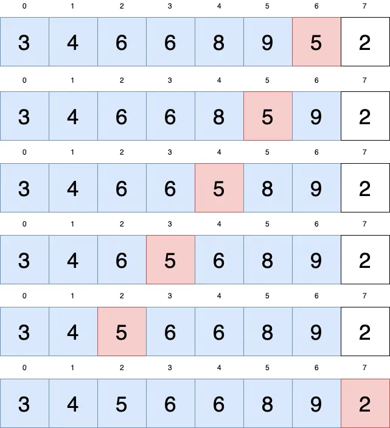
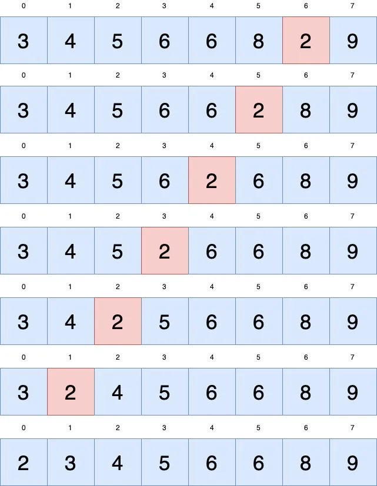

Sorting Algorithms: Insertion Sort
Sorting Algorithms: Insertion Sort
Detailed understanding of the working of the insertion sort algorithm and its implementation in C++
In this article, I'll be covering insertion sort algorithm. Most programming languages will come with a built-in sort function but in order to write better code, you need to know what's going on in the background. If you are preparing for software engineering interviews, it's very likely that this sorting algorithm may come up during your interviews.
What is Insertion Sort?
Insertion sort does not score high on performance but it is a simple sorting algorithm to understand and implement.
How Does it Work?
Let's have a look at the array we want to sort:
The way we are going to sort this list is to look at the first value in the array and consider it sorted (tentatively). The first element is in our array is 6, so we consider 6 as sorted and everything to the right of 6 as unsorted.
Then we have a look at the rest of the array to the right of 6. We are going to iterate through each value and insert it into our “sorted” array.
In the diagram below, blue is “sorted” and red is our current value we are working with:
We look at our current value = 3 and we look at the sorted part. Where does 3 go in the sorted part? It goes before 6 so lets swap them:
So far so good! Our next current value is 9. Is 9 less than 6? No, it isn't so 9 is in its correct position.
Ok. Current = 8. Is 8 less than 9? Yup. Let's swap:
Current = 4. Is 4 less than 9? Swap:
4 is still red because it hasn't completed being sorted. Is 4 less than 8? less than 6? We don't stop working with 4 until everything to its left is less than or equal to it:
Current = 6:
Current = 5:
Current = 2:
And we are done!
Code
#include <bits/stdc++.h>
using namespace std;
void insertion_sort(int arr[], int n) {
for (int i = 0; i <= n - 1; i++) {
int j = i;
while (j > 0 && arr[j - 1] > arr[j]) {
int temp = arr[j - 1];
arr[j - 1] = arr[j];
arr[j] = temp;
j--;
}
}
cout << "After Using insertion sort: " << "\n";
for (int i = 0; i < n; i++) {
cout << arr[i] << " ";
}
cout << "\n";
}
int main()
{
int arr[] = {13, 46, 24, 52, 20, 9};
int n = sizeof(arr) / sizeof(arr[0]);
cout << "Before Using insertion Sort: " << endl;
for (int i = 0; i < n; i++)
{
cout << arr[i] << " ";
}
cout << endl;
insertion_sort(arr, n);
return 0;
}
Output
Before insertion sort:
13 46 24 52 20 9
After insertion sort:
9 13 20 24 46 52
Time & Space Complexity
Time complexity: O(N2), (where N = size of the array), for the
worst, and average
cases.
Space Complexity: O(1)